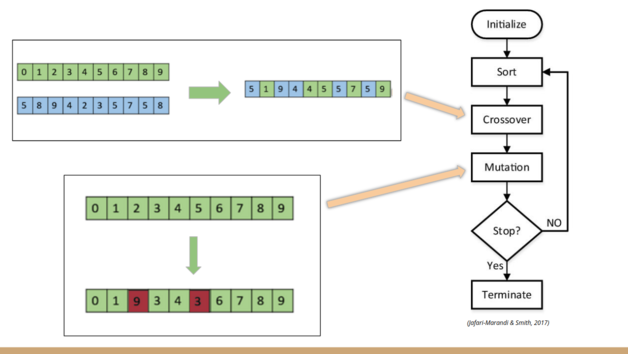

|
CS406 - Genetic Course Scheduler 0.0.1
|


|
|
CS406 - Genetic Course Scheduler 0.0.1
|
|

The algorithm works by simulating generations of chromosomes. Each chromosome is a schedule. At the end of each generation the fitness of all the chromosomes are calculated. The chromosomes with the best scores are then seperated. Crossovers and mutations are applied on these good chromosomes to create the next generation.
A child schedule is created by merging different points (course time slots) of 2 parent schedules. There is a dominant and a recessive parent. The algorithm first copies both parents and sorts both copied parents according to multiple metrics to get them in sync with each other. Then a number of random points are copied from the recessive parent to the copy of the dominant parent. This copy is then used as the child chromosome.
Below is a C-style pseudocode for the algorithm. The actual algorithm is more complicated since it has to account for consecutive class times.
After each crossover there is a chance that a mutation can occur. During a mutation, a set number of points are changed randomly. This serves introduce to new qualities to the gene pool. This part also requires sorting since we want to keep the consecutive class times together.
Below is a C-style pseudocode for the algorithm. The actual algorithm is more complicated since it has to account for consecutive class times.
Most of the courses have last for more than one hour as such they have to be scheduled into multiple consecutive time slots in the same classroom. As a result the algorithm should account for this during crossovers and mutations as well as generating the initial chromosomes.
To handle this, a root flag was implemented which indicates whether or not that particular course time is the first hour for that course in that day. Then during any operation that involves moving these course times, first an appropriate time slot is selected and the whole class is moved from the root.
Fitness score for each chromosome is calculated by comparing each course time in the schedule with all the other course times. To make this process more efficient the schedule is sorted according to time and each course is compared to the ones ahead of it. Also any collision related checks are stopped after the time slot changes.
A penalty is applied to the fitness score for each error, ranging depending on severity.
OpenMP is used to parallelize the initialization of the gene pool and the creation of new chromosomes via crossovers and mutations in each generation. During these operations each thread handles a single chromosome at any given time.
If CUDA isn't used OpenMP will also handle fitness calculations. As with mutations and crossovers, each thread will handle a single chromosome at any given time.
CUDA is used to parallelize the fitness calculations. After the chromosomes for a generation is created using OpenMP parallelism, they are given to the CUDA kernel in bulk and their fitnesses are calculated all together. In CUDA, each thread will handle a different point (course time) of a chromosome at any given time.
A feature called "variable mutations" can be activated from the config file. This will allow the mutation sizes to vary. This was implemented because a schedule may require small or big changes that can not be provided by static sized crossovers or mutations. No formal tests were performed on this option so its effectiveness is not completely clear.
An option to enable hybrid parallelism between CUDA and OpenMP for fitness calculations was implemented as well and can be activated from the config file.